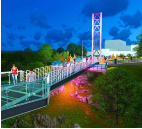
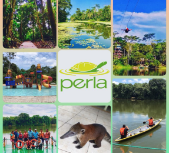

QUE VISITAR?

Puente de Cristal
Ubicado en barrio aguarico,cuenta con escalinata de 100 metros de longitud y 2.5 metros de ancho

Parque Perla
Tiene fines educativos,de investigacion cientificas,conservacion y ecoturismo
LAGUNA JULIO MARIN
Esta laguna posee 80 metros de largo y 200 metros de ancho, con una profundidad de 4 metros